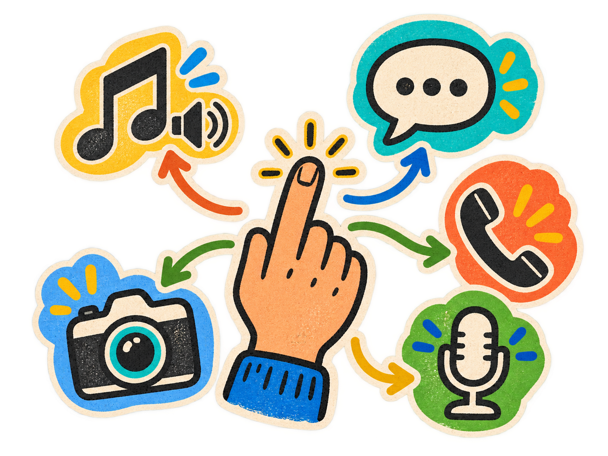

모션을 트리거로
손짓이나 몸의 움직임처럼 사용자가 정한 모션을 감지해 루틴을 시작합니다.
정해 둔 모션으로 음악, 연락, 기록 기능을 바로 실행합니다.
CueMe는 사용자가 정한 모션이나 신호를 인식해 연결된 행동을 실행하는 서비스입니다. 특정 음악을 재생하고, 지정한 사람에게 정해 둔 형식의 문자를 보내거나 전화를 걸며, 사진·영상 촬영과 음성 녹음도 하나의 루틴으로 실행할 수 있습니다.

손짓이나 몸의 움직임처럼 사용자가 정한 모션을 감지해 루틴을 시작합니다.
모션이 인식되면 지정한 곡이나 플레이리스트가 바로 재생되도록 연결합니다.
선택한 사람에게 미리 정한 형식의 문자를 보내거나 바로 전화를 겁니다.
필요한 순간에 사진·영상을 촬영하거나 음성 녹음을 시작해 기록을 남깁니다.
아이디어를 이미지로 확장한 다음 작업을 살펴보세요.